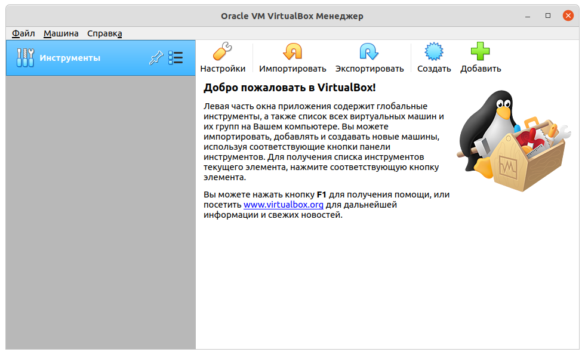

Создание виртуальной машины¶
Для работы нам понадобится машина с установленной ОС Ubuntu. Эта система удобна в использовании и в исходном состоянии укомплектована необходимыми программами.
Цель этой работы – подготовить машину с ОС Ubuntu для выполнения последующих заданий.
Вкратце план действий выглядит следующим образом:
Загрузка дистрибутива ОС Ubuntu.
Установка VirtualBox.
Создание пустой виртуальной машины.
Установка ОС на виртуальную машину.
Установка расширений VirtualBox.
Настройка виртуальной машины.
Установка дополнительных пакетов.
Загрузка дистрибутива ОС Ubuntu¶
Дистрибутив с Ubuntu доступен для скачивания на сайтах ubuntu.ru и ubuntu.com. На 2021 год доступны версии 20.04 LTS (Focal Fossa) и 21.04 (Hirsute Hippo). Дистрибутивы подготовлены под конкретные аппаратные платформы. Платфома определяется архитектурой процессора (x86) и разрядностью (32 и 64 бита). Тип аппаратной платформы будет прописана в имени скачиваемого файла, а также в гиперссылке на него.
Warning
Обычно при загрузке аппаратная платформа выбирается автоматически, и она совпадает с платформой вашего компьютера. Если мы устанавливаем систему на другой компьютер, необходим проверить совместимость дистрибутива с ним.
Выберим ту платформу, которая нам точно подойдет. Если наш компьютер использует 32-битный процессор, то нет причины скачивать 64-биную версию дистрибутива.
Скачиваемый файл имеет формат и расширение iso – образ оптического диска. Он нам понадобится далее для установки ОС на машину (компьютер).
Установка VirtualBox¶
Мы вольны установить Ubuntu на домашний настольный компьютер или ноутбук параллельно основной ОС. Но это подвергает риску основную систему. Поэтому сделаем по-другому – развернем дистрибутив не на настоящей машине, а на виртуальной. Виртуальную машину можно загрузить на флешку и запустить на другом компьютере. Она представлена в виде файла.
Для создания и запуска виртуальной машины нам понадобится программа VirtualBox. Она доступна бесплатно и свободна для использования. Загрузим и установим ее на те компьютеры, на которых мы планируем запускать виртуальную машину с Ubuntu.
Создание пустой виртуальной машины¶
Запустите программу VirtualBox. Перед нами появится окно программы без списка виртуальных машин.
В появившемся окне нажмите кнопку Создать на панели инструментов.
Появится диалоговое окно “Создать виртуальную машину”.
На первом шаге создания виртуальной машины выбирается имя и тип ОС.
В нашем случае это Linux и Ubuntu (64-bit).
Альтернативой может быть Linux и Ubuntu (32-bit).
Имя может быть любым, в этом конкретном случае было выбрано “Ubuntu 21.04”.
Переходим на следующий шаг нажатием кнопки Далее.

На втором шаге указываем объем оперативной памяти. По умолчанию, программа предлагает 1 Гб. Но мы выберем 2 Гб, так как аппаратных ресурсов на нашей машине хватает. Это значение можно изменить позже в настройках.

На третьем шаге создаем новый виртуальный жесткий диск. Поэтому выберем переключателем соответствующий пункт.

Последующие шаги связаны с настройкой виртуального жесткого диска.
Здесь мы укажем первый пункт – VDI (VirtualBox Disk Image).

Здесь указываете формат хранения диска – динамический или фиксированный. Выберите любой из них.

На последнем шаге настройки диска выбирается наибольший размер жесткого диска. По умолчанию программа предлагает 10 Гб. Но этот объем быстро займется данными. Поэтому выберите как можно больше объема: от 30 до 50 Гб.
В основном окне программы появится новая виртуальная машина под именем “Ubuntu 21.04”.

Установка ОС на виртуальную машину¶
Следующим шагом после создания виртуальной машины станет установка операционной системы.
Перед установкой примонтирует наш загруженный образ ubuntu-21.04-desktop-amd64.iso в оптический привод.
В реальности это выглядело бы как установка DVD-диска в дисковод.
Для этого нажмите кнопку Настроить при выделенной в списке машине.
Появится диалоговое окно “Ubuntu 21.04 - Настройки”
В окне выберите Носители, Контроллер: IDE -> Пусто.
Нажмите на значок с диском и появится выпадающее меню.
В меню выберите команду Выбрать файл диска....
В появившемся диалоговом окне выберите файл с образом дистрибутива.

В настройках появится элемент с названием открытого файла образа.

Запустите машину, нажав кнопку Запустить.
Выполняйте инструкции установщика ОС.
В конце система попросит перезагрузки.
Выключите машину и перейдите в настройки Носители.
Удалите из оптического привода образ с установщиком Ubuntu.
Повторно запустите виртуальную машину.
Установка расширений VirtualBox¶
Для улучшения удобства взаимодействия с виртуальной машиной необходимо установить дополнительное системное ПО от VirtualBox.
Примонтируем к оптическому приводу файл VBoxGuestAdditions_6.1.16.iso.
Файл можно смонтировать двумя способами: через настройку Носители или главное меню запущенной машины Устройства -> Подключить образ диска Дополнений гостевой ОС...
Откроем программу Files с обозревателем файловой системы.
Ее ярлык в виде папки расположен на левой вертикальной панели рабочего стола.
Среди стандартных каталогов мы увидим примонтированный образ VBox_GAs_6.1.16 в виде каталога.
Откроем его и двойным щелчком мыши запустите файл autorun.sh.
Note
Эти же действия мы можем выполнить из эмулятора терминала.
Вызовем его горячими клавишами Ctrl+Alt+T.
Перейдем в каталог /media/sppo/VBox_GAs_6.1.16/ и запустим на выполнение файл autorun.sh командами
cd /media/sppo/VBox_GAs_6.1.16
./autorun.sh
После перезагрузки экран виртуальной машины развернется на все предоставленное ему пространство.
Настройка виртуальной машины¶
Объединим системные буферы двум машин (виртуальной и основной) в один.
Включим опцию Двунаправленный, расположенную в меню Устройства -> Общий буфер обмена.
Установка дополнительных пакетов¶
Установим дополнительные пакеты в систему, которые нам понадобятся для выполнения работ.
Пакет build-essential содержит набор инструментальных средств, библиотек и заголовочных файлов для сборки программ из исходных кодов.
Пакет manpages-dev содержит справочное руководство о системных функциях.
Текстовый редактор vim не входит по умолчанию в систему.
Его установим тоже.
sudo apt update
sudo apt install build-essential
sudo apt install manpages-dev
sudo apt install vim